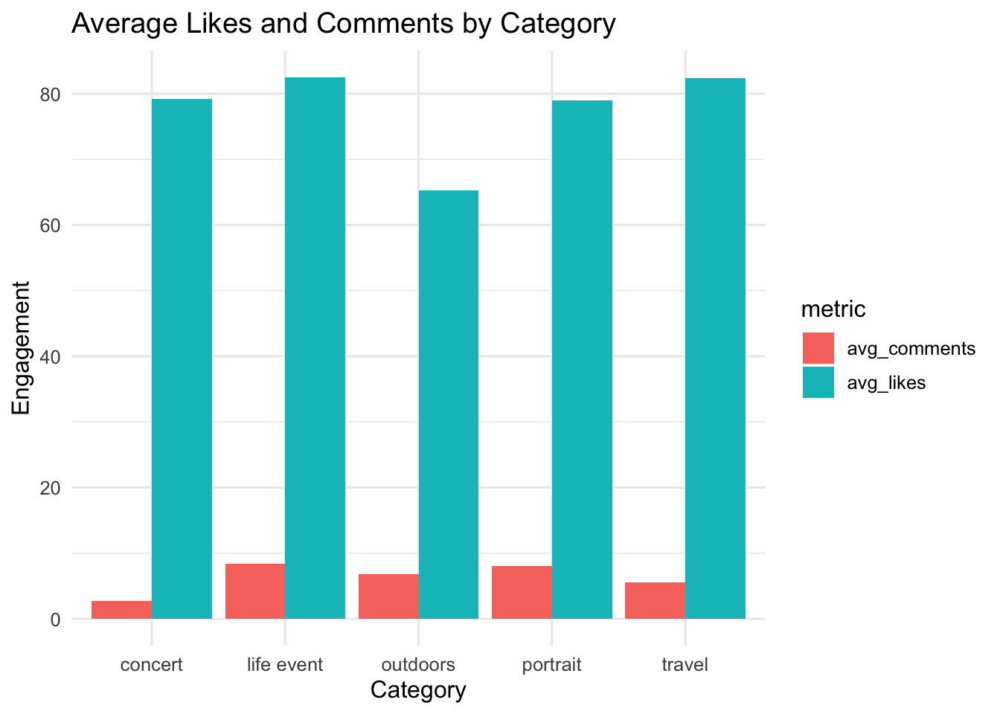
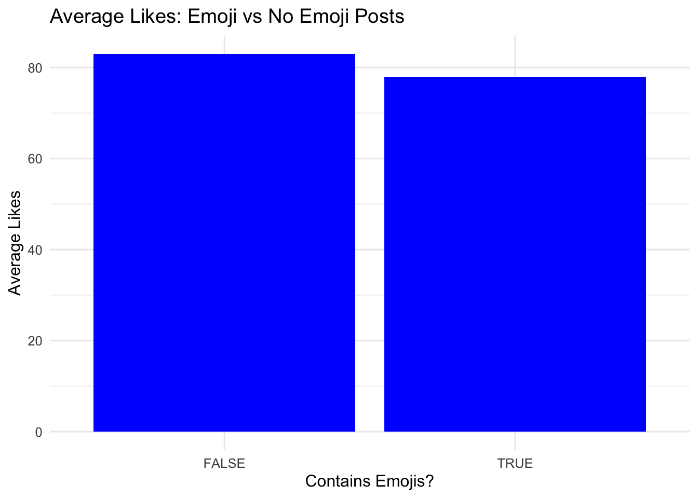
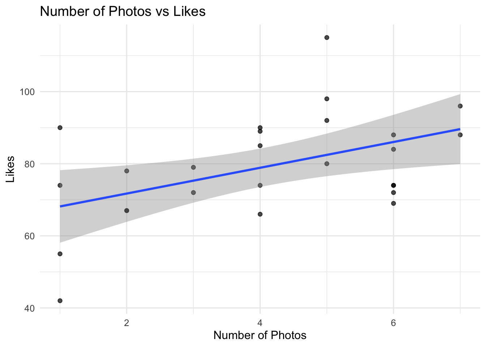
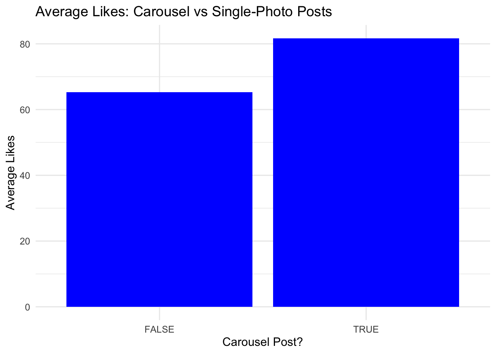
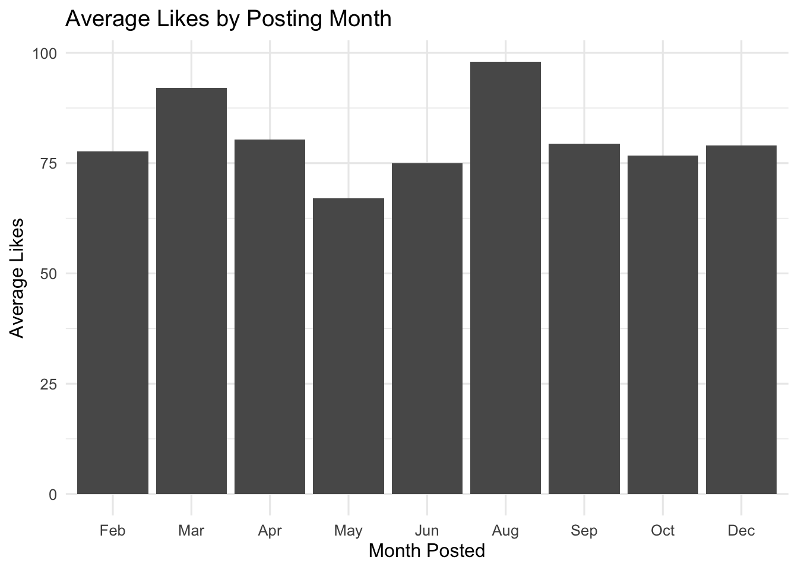

# Clear environment
rm(list = ls())Instagram Photography Engagement
Introduction
Instagram is a widely used platform for sharing visual media, especially photography. As someone who frequently posts travel, concert, and life-event photos, I wanted to understand which types of posts perform better on my account. By examining features like captions, emojis, number of photos, and posting month, this project explores what factors are associated with higher engagement.
Research Questions
- Do certain photography categories (travel, concert, life event, etc.) get more likes or comments?
- Do posts that include emojis get more engagement than posts without emojis?
- Do carousel posts (containing multiple photos) get more engagement than single-photo posts?
- Does the month posted affect likes?
Data
This project uses a custom dataset consisting of 26 Instagram posts collected between June 2022 and August 2025. Each observation represents a single post and includes variables describing engagement and content characteristics. Recorded variables include the date of posting, number of likes and comments, caption text, number of emojis used, number of photos per post, post category, and binary indicators for whether a face and hashtags were present. These variables allow for analysis of how different posting attributes relate to patterns in audience engagement.
Source and acquisition
The dataset was created through manual collection from my personal Instagram account. For each post, I recorded publicly visible information directly from the platform, including engagement metrics and caption details. No automated tools or scraping methods were used. All data reflects real posting behavior from my own account and was compiled specifically for this project to support exploratory analysis of engagement trends.
License and ethics
All data come from my personal account and were recorded manually by me. No private informationor third-party data were collected. Only engagement counts already visible on each post were used.Because this is my own content, there are no licensing conflicts or privacy risks.
Data Cleaning and Quality Checks
library(tidyverse)
library(janitor)
library(lubridate)importing the data
instagram_raw <- readxl::read_excel("data/raw/Instagram_dataset.xlsx") %>%
clean_names()instagram_clean <- instagram_raw %>%
mutate(
date = as.Date(date),
likes = as.numeric(likes),
comments = as.numeric(comments),
emojis = as.numeric(emojis),
numbers_of_photos = as.numeric(numbers_of_photos),
shares = as.numeric(shares),
category = str_to_lower(str_trim(category)),
has_face = str_to_lower(str_trim(has_face)),
has_face = recode(has_face, "ues" = "yes"),
hashtag = str_to_lower(str_trim(hashtag)),
has_emojis = emojis > 0,
is_carousel = numbers_of_photos > 1,
engagement = likes + comments,
month = month(date, label = TRUE, abbr = TRUE)
)This gives us a fully cleaned dataset with proper variable names and makes it ready for use to analyze.
# Do certain photography categories (travel, concert, life event, etc.) get more likes or comments?
instagram_clean %>%
group_by(category) %>%
summarise(
avg_likes = mean(likes),
avg_comments = mean(comments)
) %>%
pivot_longer(cols = c(avg_likes, avg_comments),
names_to = "metric", values_to = "value") %>%
ggplot(aes(x = category, y = value, fill = metric)) +
geom_col(position = "dodge") +
labs(
title = "Average Likes and Comments by Category",
x = "Category",
y = "Engagement"
) +
theme_minimal(12)
instagram_clean %>%
group_by(category) %>%
summarise(
avg_likes = mean(likes),
avg_comments = mean(comments),
avg_engagement = mean(engagement)
)# A tibble: 5 × 4
category avg_likes avg_comments avg_engagement
<chr> <dbl> <dbl> <dbl>
1 concert 79.2 2.75 82
2 life event 82.5 8.38 90.9
3 outdoors 65.2 6.75 72
4 portrait 79 8 87
5 travel 82.3 5.56 87.9Interpretation of Average Likes and Comments by Category. The chart above shows that travel (average likes ≈ 82.3) and life-event posts (≈ 82.5) receive the highest average likes. Concert and portrait posts have slightly lower averages, and outdoor posts have the lowest, although that category contains only two posts and should be interpreted cautiously. For comments, life-event and portrait posts have the highest averages. Overall, while there are small differences, category alone does not appear to strongly determine engagement.
# Do posts that include emojis get more engagement than posts without emojis?
instagram_clean %>%
group_by(has_emojis) %>%
summarise(avg_likes = mean(likes)) %>%
ggplot(aes(x = has_emojis, y = avg_likes)) +
geom_col(fill = "Blue") +
labs(
title = "Average Likes: Emoji vs No Emoji Posts",
x = "Contains Emojis?",
y = "Average Likes"
) +
theme_minimal(12)
instagram_clean %>%
group_by(has_emojis) %>%
summarise(avg_likes = mean(likes))# A tibble: 2 × 2
has_emojis avg_likes
<lgl> <dbl>
1 FALSE 83
2 TRUE 78Interpretation of Average Likes: Emojis vs No Emoji Posts Posts without emojis receive a slightly higher average number of likes (≈ 83) than posts with emojis (≈ 78). The difference is small, but the trend suggests that captions without emojis may perform marginally better. Emojis do not appear to increase engagement in this data set.
#Do carousel posts (containing multiple photos) get more engagement than single-photo posts?
instagram_clean %>%
ggplot(aes(numbers_of_photos, likes)) +
geom_point(alpha = 0.7) +
geom_smooth(method = "lm") +
labs(
title = "Number of Photos vs Likes",
x = "Number of Photos",
y = "Likes"
) +
theme_minimal(12)
instagram_clean %>%
group_by(is_carousel) %>%
summarise(avg_likes = mean(likes)) %>%
ggplot(aes(x = is_carousel, y = avg_likes)) +
geom_col(fill = "Blue") +
labs(
title = "Average Likes: Carousel vs Single-Photo Posts",
x = "Carousel Post?",
y = "Average Likes"
) +
theme_minimal(12)
instagram_clean %>%
group_by(is_carousel) %>%
summarise(avg_likes = mean(likes))# A tibble: 2 × 2
is_carousel avg_likes
<lgl> <dbl>
1 FALSE 65.2
2 TRUE 81.7Interpretation of Average Likes: Carousel vs Single-Photo Posts The bar chart shows that carousel posts receive a higher average number of likes (≈ 81.7) than single-photo posts (≈ 65.3). This suggests that giving viewers multiple images to swipe through may increase engagement. The difference is noticeable but not extremely large. On the Scatter plot you can see posts with ~5 photos do the best.
# Here we are checking if the month posted influences likes.
instagram_clean %>%
group_by(month) %>%
summarise(avg_likes = mean(likes)) %>%
ggplot(aes(x = month, y = avg_likes)) +
geom_col() +
labs(
title = "Average Likes by Posting Month",
x = "Month Posted",
y = "Average Likes"
) +
theme_minimal(12)
instagram_clean %>%
group_by(month) %>%
summarise(avg_likes = mean(likes))# A tibble: 9 × 2
month avg_likes
<ord> <dbl>
1 Feb 77.7
2 Mar 92
3 Apr 80.3
4 May 67
5 Jun 75
6 Aug 98
7 Sep 79.4
8 Oct 76.7
9 Dec 79 Interpretation: Engagement can vary by posting month. Engagement varies slightly by posting month. August has the highest average (≈ 98 likes), followed by March (≈ 92). May has the lowest average (≈ 67). The dataset is small, so patterns should be viewed with caution, but the results suggest that posting month may have a minor influence on engagement.
Limitations
Although this analysis provides useful insights, it has several limitations. First, the dataset is small (26 posts), which limits the strength of the conclusions. Some categories, such as outdoors, contain only one or two posts, making their averages unstable. Second, Instagram engagement is influenced by many factors not captured in this dataset, such as posting time, story shares, algorithm changes, and follower activity. Third, because the dataset was created manually, there may be small recording inconsistencies. Finally, the results reflect only a single personal account and should not be generalized to other users or the broader platform.
Conclusion
This analysis explored how different posting choices relate to engagement on my Instagram account. While no factor produced dramatic differences, several patterns emerged. Travel and life-event posts tended to receive slightly higher likes, while emojis did not improve engagement. Carousel posts showed a clearer advantage over single-photo posts, and posting month displayed minor variation, with August performing the best. These findings should be interpreted cautiously due to the small dataset, but they provide useful insight into my own posting habits. Moving forward, I may prioritize carousel posts and experiment with caption styles to see how engagement changes over time.